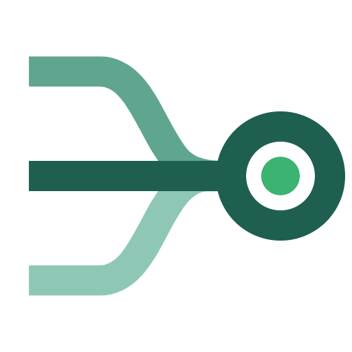

A patient-assistance application is a stack of four documents. Every hand-off in the chain opens all four again.
Identity, household size, income attestation, consent.
Pay stubs or a tax return, checked against the program's cap.
No coverage, or a denial for this exact drug.
Prescriber, NPI, dosage and refills.
Intake, eligibility, fulfillment and compliance each re-read the same PDFs. That re-reading is the cost Verdikt removes.
Reading may be wrong, so it stays reviewable. Writing must be reproducible, so it never touches a model.
Extraction, triage, retrieval and a structured verdict. Each step has a fallback and an audit entry.
The reply is a merge of a frozen, human-approved template with the verdict. No model on this path.
Reviewers see every stage and approve or reject a held reply. A boundary test fails the build if the render core imports the AI layer.
FastAPI web · background worker · Postgres · Redis · S3-compatible storage · tenant-scoped · one Nebius Token Factory endpoint. A reviewer approves or rejects a held reply in the pipeline view.
Models run on one Nebius endpoint. Rules are human-authored and versioned. Templates are frozen before they can render.
Green steps use models and stay reviewable. The amber step is deterministic code. Dark steps are people and plumbing.
| Case type | Route | Decide runs? |
|---|---|---|
| New intake | Decide, then deliver | Yes |
| Refill | Straight to pharmacy | No |
| Appeal | CRM appeals queue | Yes |
| Missing-info reply | Decide on merged evidence | Yes |
| Not decidable | Reject, audit row only | No |
Cardiovita cap $84,600 (400% of the poverty guideline): passes.
OncoBridge cap $52,875 (250%): fails.
Same code, different data.
Routes are a table, overridable per program or tenant. If the triage model fails or is unsure, a rule-based classifier takes over.
Boundary tests fail the build if the render core imports the AI layer.
On one dense 104-field form, correct labels went from 24 to 98 with vision, chunking and crop.
One audit entry per stage, with the model that handled it and the time it took.
| Stage | Model | Job |
|---|---|---|
| Ingest | openbmb/MiniCPM-V-4_5 | Multimodal extraction |
| Triage | NVIDIA Nemotron Nano | Case classification and routing |
| Decide | Qwen/Qwen3-Embedding-8B | Rule retrieval |
| Decide | NVIDIA Nemotron Super 120B | Cited, structured verdict |
Every model call goes through Nebius Token Factory.
The model per stage is set per tenant or program, with no code change.
The reply comes from a frozen template, never from a model.
The pattern generalizes: prior authorization, benefit verification, informed consent and safety reporting share the same shape, a regulated letter that is also the audit artifact.
The runbook and checklist are written; the models already run on Token Factory.
Replay a stored case in CI and assert the letter's bytes, not only its structure.
Fill the "to measure" figures from real cases.
AI reads. Deterministic code writes. Humans decide.